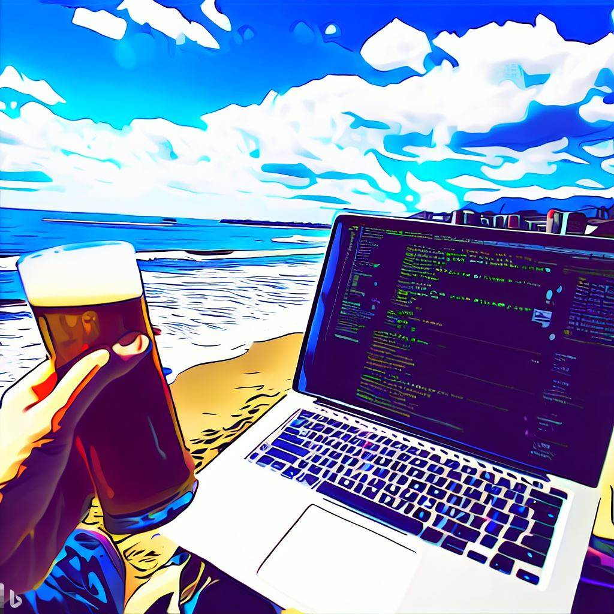

Shonan Code Summit
Agentic Coding on the Coast
海辺のエージェンティック・コーディング
📍 Tokyo + Shonan, Japan
📍 東京 + 神奈川県湘南エリア
A two-part event series where engineers, creators, and builders come together to explore the frontier of agentic coding — AI agents that write, review, test, and deploy code alongside humans.
The Shonan Code Summit (ShoCode) is a community-powered, fully bilingual event held across two moments: an evening challenge-design workshop in Tokyo (September) to validate real problems, followed by a full-day hackathon on the Shonan coast (October) where teams build working demos. It's not a corporate conference — it's a space for people who build things. Expect deep technical talks, hands-on hacking, live demos, and a community that values substance over spectacle.
エンジニア、クリエイター、ビルダーが集い、エージェンティック・コーディングの最前線を探求する2部構成のイベントシリーズ。AIエージェントが人間と共にコードを書き、レビューし、テストし、デプロイする世界を体感します。
Shonan Code Summit（ShoCode）は、2つのパートで構成されるコミュニティ主導の完全バイリンガルイベントです。東京でのチャレンジデザインワークショップ（9月の夕方）でリアルな課題を検証し、湘南の海岸でのフルデイハッカソン（10月）でチームが動くデモを作ります。企業カンファレンスではありません。ものづくりをする人のための場所です。深い技術トーク、ハンズオンハッカソン、ライブデモ、そして華やかさよりも中身を大切にするコミュニティが待っています。
ShoCode unfolds across two events — a challenge-design workshop in Tokyo and a full-day hackathon on the Shonan coast.
ShoCodeは2つのイベントで構成されます。東京でのチャレンジデザインワークショップと、湘南の海岸でのフルデイハッカソン。
An evening sprint in the Tokyo area where a small group uses a structured validation framework to pressure-test the hackathon's challenge areas. No coding — just focused, productive friction to make sure every challenge is anchored to a real stakeholder need.
A full day on the Shonan coast. Morning talks on agentic coding, followed by a 2.5-hour hackathon where teams build working demos with AI coding agents. The day closes with live demos, community awards, and celebration.
東京エリアでの夕方のスプリント。少人数で構造化されたバリデーションフレームワークを使い、ハッカソンのチャレンジ領域を検証します。コーディングなし — すべてのチャレンジが実際のステークホルダーのニーズに基づいていることを確認するための集中した生産的な対話。
湘南の海岸での終日イベント。午前中はエージェンティック・コーディングに関するトーク、午後は2.5時間のハッカソンでAIコーディングエージェントを使って動くデモを作ります。ライブデモ、コミュニティアワード、セレブレーションで1日を締めくくります。
The hackathon day unfolds in three distinct acts — presentations, hands-on building, and live demonstrations.
ハッカソンデイは3つのパートで構成されます。プレゼンテーション、ハンズオンビルディング、そしてライブデモ。
Deep-dive talks on agentic coding — autonomous agents, human-in-the-loop workflows, AI-assisted architecture, prompt engineering for code generation, and the evolving relationship between developers and AI.
Roll up your sleeves and build something real. Bring a project idea or form a team on-site. Use agentic tools and techniques to create, experiment, and push boundaries in a collaborative setting.
Teams take the stage to showcase what they built. Live demos, honest feedback, and a celebration of what's possible when humans and AI agents code together.
エージェンティック・コーディングに関するディープダイブ・トーク。自律的エージェント、ヒューマン・イン・ザ・ループ、AIアシスト・アーキテクチャ、コード生成のためのプロンプトエンジニアリングなど。
手を動かして、実際にものを作る時間。アイデアを持ち込んでも、会場でチームを組んでもOK。エージェンティックなツールと技術を駆使して、新しい可能性を切り拓きましょう。
チームがステージに立ち、作ったものを披露します。ライブデモ、率直なフィードバック、そして人間とAIエージェントが共にコーディングする可能性を讃える瞬間です。
This event is for people who make things. If you ship code, design systems, or prototype ideas — you belong here.
No pitches, no investor decks. Honest, rigorous technical content from people who know their craft.
Sponsors are welcome partners, but this event belongs to the community. Always has, always will.
Presentations and materials in both Japanese and English. Participate in whichever language you're most comfortable with.
このイベントは、ものを作る人のためのイベント。コードを書く人、システムを設計する人、アイデアをプロトタイプする人 — あなたの場所です。
マーケティングも投資家向けプレゼンもありません。その道のプロによる、誠実で深い技術コンテンツ。
スポンサーは大切なパートナーですが、このイベントはコミュニティのもの。それは変わりません。
プレゼンテーションも資料も日本語と英語の両方で。あなたが最も快適な言語でご参加ください。
What sets ShoCode apart is its setting. The Shonan area stretches along the coast of Kanagawa Prefecture, with views of Mount Fuji across Sagami Bay, ocean breezes, and the relaxed energy that only a coastal town can offer.
This isn't another conference in a windowless hotel ballroom. The Shonan coast provides a backdrop that sparks creativity — beaches, trails, surf culture, local cafés, and the unmistakable feeling that you've stepped outside the ordinary. Come for the code, stay for the sea.
ShoCodeを特別なものにしているのは、その立地です。湘南エリアは神奈川県の海岸線に広がり、相模湾越しに望む富士山、心地よい潮風、そして海辺の街ならではのリラックスした空気感があります。
窓のないホテルの宴会場で行われるカンファレンスとは違います。湘南の海岸は、クリエイティビティを刺激するステージ。ビーチ、トレイル、サーフカルチャー、地元のカフェ、そして日常から一歩踏み出した特別な感覚。コードのために来て、海のために留まってください。
Registration is handled through our GitHub repository. Submit your profile page via pull request — or ask @copilot to create it for you. It's registration-as-agentic-coding, fitting for an event about AI that codes alongside humans. You can attend just the hackathon, or both the workshop and hackathon.
参加登録は GitHub リポジトリを通じて行います。プロフィールページを Pull Request で提出するか、@copilot に作成を依頼してください。AIと人間が共にコードを書くイベントにふさわしい、エージェンティックな登録方法です。ハッカソンだけの参加も、ワークショップとハッカソン両方の参加も可能です。
Register on GitHub GitHub で登録する